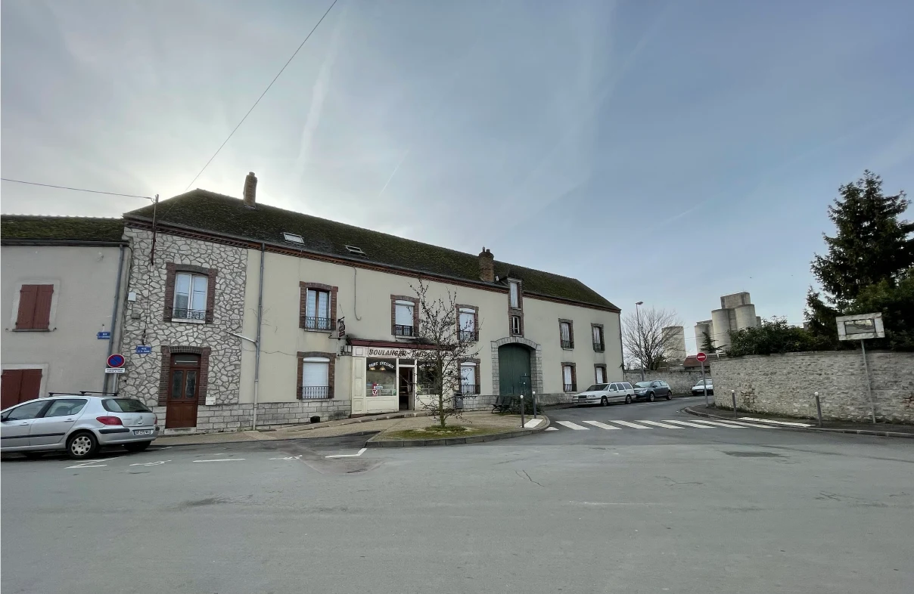
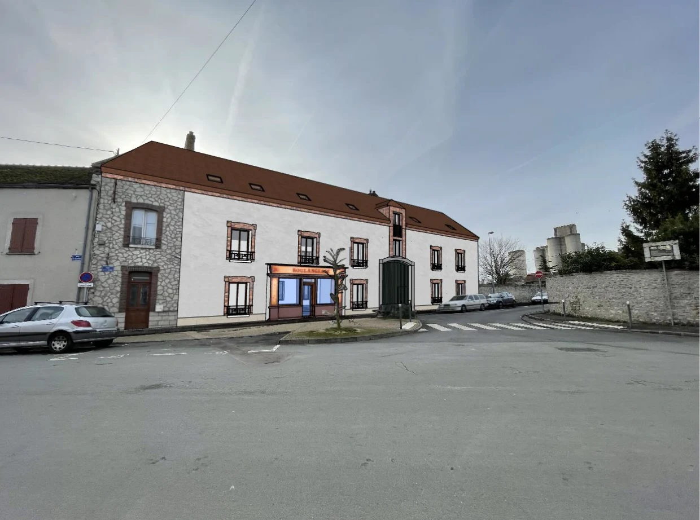
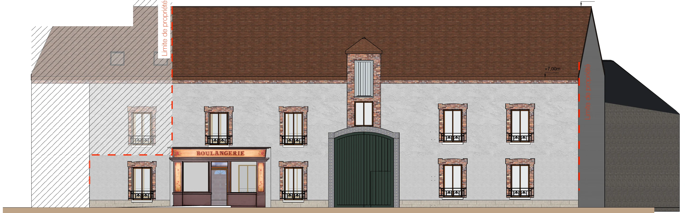
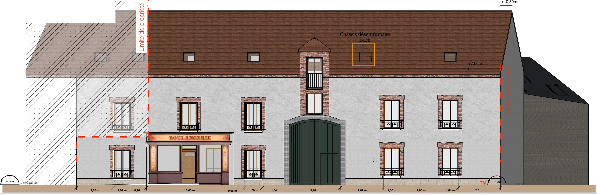
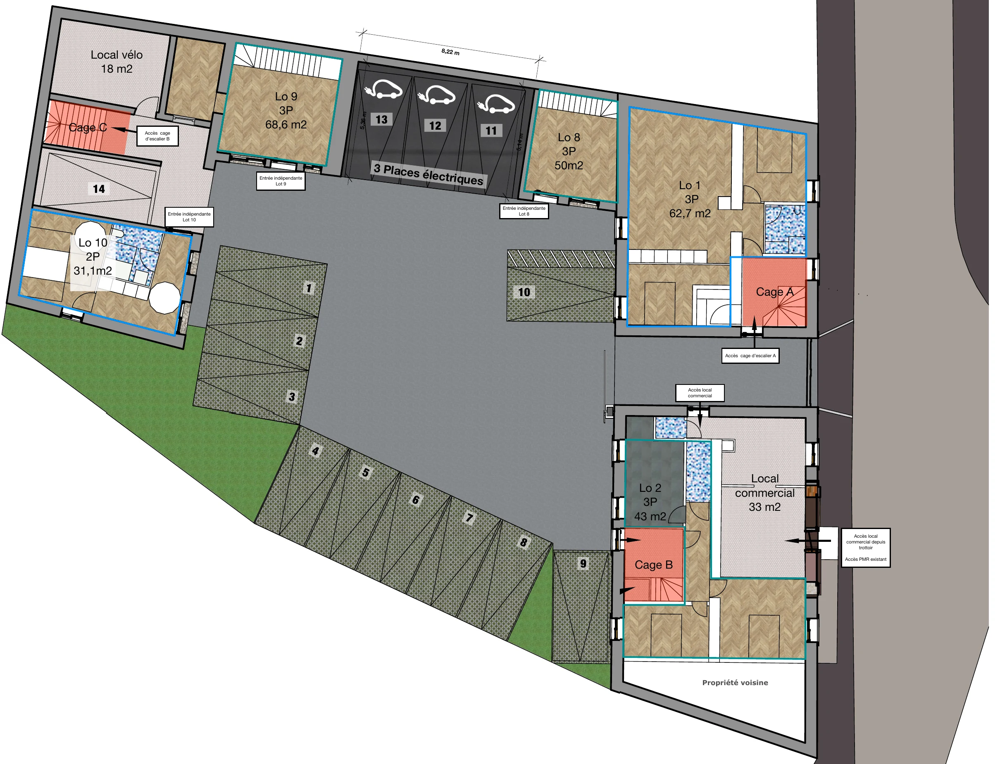

Réalisation · Château-Landon (77)
Une grange, une boulangerie…
12
logements.
Sans monter d'un centimètre la hauteur des façades.
Avant / après dans la rue
Le même bâtiment,
une nouvelle vie.

AVANT

APRÈS · INSERTION PROJET
La façade sur rue
Garder le caractère,
ajouter la lumière.
EXISTANT

PROJET

La boulangerie reste. Briques, encadrements et porte cochère sont conservés. Seules des fenêtres de toit apparaissent.
Le vrai défi : le stationnement
14
places,
trouvées sur la parcelle.

Dans la cour et sous la grange, dont 3 avec borne de recharge et 1 place PMR. Plus un local vélos et un logement adapté PMR.
Le projet en chiffres
Transformer
plutôt que construire.
11
logements créés dans le volume existant
14
places de stationnement sur la parcelle
882 m²
de terrain seulement
0 m
de hauteur en plus
Écrivez « DIVISION » en DM →